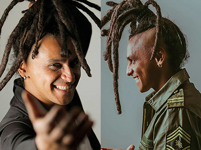
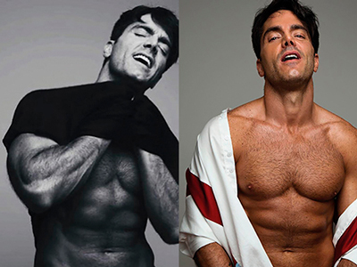

Actualidad Nacional

¡TRABAJO SI HAY!
Vemos a Juan Millán todas las noches en la serie El Bronx con su personaje Fernando quien ahora esta grabando la nueva versión de Amar y vivir, en esta producción lo veremos en una faceta más amorosa, enamorado y entregado. En sus redes sociales se nota la gran amistad que Juan tiene con los protagonistas :Ana María Estupiñan y Carlos Torres, pues gracias a las exigentes jornadas de grabación se han convertido en grandes amigos. En la parte personal se sabe que se encuentra soltero y que el amor de su vida es su pequeño hijo Juan Diego de 2 años.
¡MÁS QUE TALENTO!
La cantante barranquillera Giulianna de 12 años ex participante de la Voz Kids 2018, es todo un prodigio en el arte, pues en su ciudad natal también es actriz, fashionista y ahora escritora, durante los años 2017 y 2018 escribió un libro llamado Sueña conmigo el cual esta en su pagina web y sera publicado en un portal virtual, lo que se recaude con la venta lo donará a una causa social. En el libro cuenta como hizo para ser cantante, como conseguir casting, quien la asesora en su imagen y como logro descubrir sus talentos.

¡CORAZÓN DE ORO!
El cantante y compositor bogotano Chalmy además de hacer canciones con términos muy sociales; incluye fundaciones de niños quemados y personas mutiladas por la guerra en sus videos, también sigue con la hermosa labor de todas las semanas entregar mas de 100 almuerzos a personas de la tercera edad y en pobreza absoluta en el centro de la ciudad, asegura el artista que cada semana llegan ángeles que le ayudan a cumplir su cometido como lo son el grupo de moteros GBR ( uno de los más grandes de Colombia) y actrices como la caleña María Claudia Torres que siempre que puede se une a esta linda causa. Una gran labor y amor por el prójimo.

¡AL DESNUDO!
Tomado de @managerluisbascaran
El actor venezolano Ernesto Calzadilla tuvo una estricta rutina para logar que su cuerpo luciera perfecto a la hora de hacer las fotos para un calendario que cuesta 15.000 mil pesos. Algunas de las fotografías fueron publicadas en su cuenta de Instagram, estas recibieron varios comentarios positivos y el la acompañó con el mensaje, “El 85% de la comunidad, que son mujeres, siempre hacen comentarios positivos. Que me baje más la toalla o que muestra otra cosa; que muestre por delante. Hay de todo. En general ha sido positivo y bonito. También, alguno que otro chico, no pasa nada, todo bien siempre y cuando colaboren”. Para ayudar a los venezolanos.
¡FACEBOOK TRABAJA EN SU PROPIA CRIPTOMONEDA!
La compañía creada por Mark Zuckerberg estaría
buscando una inversión de mil millones de dólares para
poner en marcha su moneda virtual. La gran ventaja es
que la red social podría utilizarla para crear su propio
sistema de pagos ahora que está tratando de mejorar
la experiencia de compra a través de su plataforma
e incluso se estaría planteando crear una segunda
app para la compra y venta de productos, donde se
incluirían además recomendaciones realizadas por las
celebridades a través de su páginas ofciales, con el
objetivo de plantarle cara así a Amazon.
¿Ustedes que opinan sobre esta nueva posibilidad?
“HACEN BUENA PAREJA”
Tomado de @ andyrivera y @linatejeiro
La relación de Andy Rivera con Lina Tejeiro hace parte del pasado pues ya hace varios meses terminaron, hoy en día entre ellos existe una bonita amistad, como dicen por ahí la vida continúa, pues el artista esta lanzado un nuevo sencillo junto a la cantante Farina con quien ha tenido gran química pues en el video se puede apreciar su complicidad, esto ha desatado los comentarios de sus seguidores quienes aseguran que hacen buena pareja. ¿Estaremos frente a un nuevo romance?